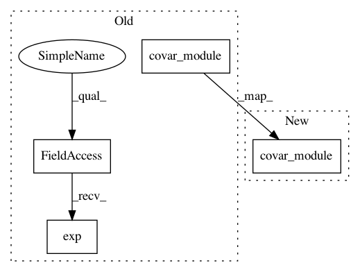

0edbd6e408ef58126353912bf5782510eec3e8f8,test/examples/test_kissgp_variational_regression.py,GPRegressionModel,forward,#GPRegressionModel#Any#,45
Before Change
def forward(self, x):
mean_x = self.mean_module(x)
covar_x = self.covar_module(x) * self.log_outputscale.exp()
return GaussianRandomVariable(mean_x, covar_x)
class TestKissGPVariationalRegression(unittest.TestCase):
After Change
def forward(self, x):
mean_x = self.mean_module(x)
covar_x = self.covar_module(x)
return GaussianRandomVariable(mean_x, covar_x)
class TestKissGPVariationalRegression(unittest.TestCase):
In pattern: SUPERPATTERN
Frequency: 3
Non-data size: 4
Instances
Project Name: cornellius-gp/gpytorch
Commit Name: 0edbd6e408ef58126353912bf5782510eec3e8f8
Time: 2018-08-17
Author: gpleiss@gmail.com
File Name: test/examples/test_kissgp_variational_regression.py
Class Name: GPRegressionModel
Method Name: forward
Project Name: cornellius-gp/gpytorch
Commit Name: 7e2f6cdde9ba5b1611ef68e80bf5e36891454f9d
Time: 2018-01-30
Author: gpleiss@gmail.com
File Name: test/examples/kissgp_additive_regression_test.py
Class Name: GPRegressionModel
Method Name: forward
Project Name: cornellius-gp/gpytorch
Commit Name: eafe22fb6efddf2847580af4edad087c0d9be26a
Time: 2018-08-17
Author: gpleiss@gmail.com
File Name: test/examples/test_simple_gp_classification.py
Class Name: GPClassificationModel
Method Name: forward